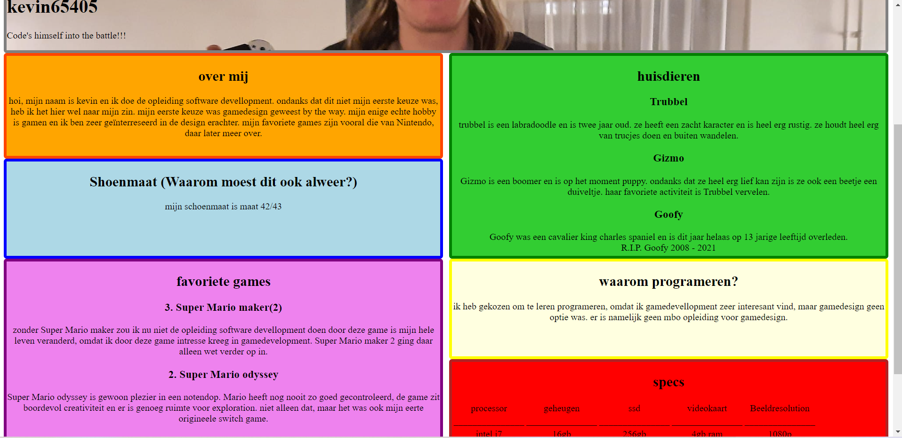

Website
Het maken van deze website was mijn eerste ervaring met html/css. De website was gemaakt voor een simpele school opdracht, maar het was leuk om html/css te leren. Ik was de designer en programeur.
